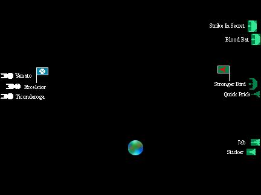
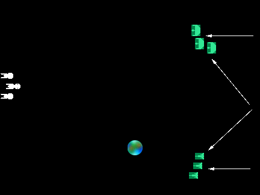
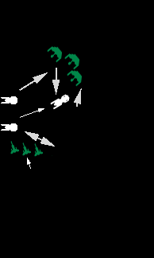
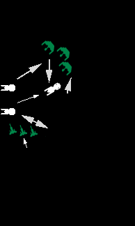

Battle Report
The primary purpose of this battle was to allow some disgruntled players to prove that the previous scenario was severely unbalanced, and that powerful Star Fleet ships could smash any cloaked enemy force. That theory didn't work out as planned.

Klingons. The Klingons decided to start by playing with the heads of the enemy (which would probably have worked, if there had been any functioning brain cells therein). The force was initially divided into three groups, two cloaked Stronger Birds on the right, two cloaked Stingers on the left, and one of each uncloaked in the center. The plan was to let the enemy see the uncloaked ships in the center; have them cloak, split, and join their squadrons. Each squadron would then proceed down a flank until in attack position.
Federation. The Star Fleet commander had a plan, a bad (no ... horrible) plan, but he had a plan. His force would sit still, and force the enemy to come to them, thus giving them the maximum time to scan for cloaked ships.

The Beginning. The Federation saw the two uncloaked ships, and assumed the enemy was going to come straight at them. The center Klingon ships cloaked and rejoined their squadrons, as planned.
The Approach. The Klingon destroyer squadron slid behind the planet, using it to mask them from Federation sensor scans. This turned out to be very useful, as the only successful Federation sensor scan against the destroyers occurred when they were behind the planet (and so convinced the Federation commanders that there were no Klingons on their right side).
The Klingon cruiser squadron took a more evasive path. Fairly early, the Excelsior detected the Strike In Secret. Realizing this, the Klingons changed course to cross the edge of the sensor scan. After that, the cruiser squadron continued moving back and forth across the scan line so that they were always outside of the Federation scans.
The result of the cruiser's movement and the destroyer's luck was to place the Klingons almost in attack position on either forward flank of the Federation force.
The Fighting Begins. As the Klingons were approaching their prey, the commander of the destroyer squadron wanted to launch an immediate attack, before they were detected by the short range Federation scans. The force commander pointed out that the destroyers, being short on power, could not effectively arm their weapons while cloaked. He ordered that they continue until closer. To give them the time, the cruisers would distract the enemy.
The distraction came from the commander of the Strike In Secret, who excitedly pointed out that the cruisers were in torpedo range, and should attack. So, failing to confirm this information, the force commander agreed. The cruisers decloaked, caught the attention of the Federation ships, and then found that they were still well out of torpedo range.
The Federation ships, meanwhile, were busy being confused. The Ticonderoga scanned the area of the destroyers, and found nothing. The Excelsior locked its weapons onto the Strike In Secret, and the Yamato continued to scan for cloaked ships (which weren't there).
As the destroyers slipped closer, the cruisers pushed their movement to the maximum to get into torpedo range. At the last moment, they were able to fire their weapons, just as the Excelsior opened fire. Amazingly, the exchange did not go too bad for the Klingons. The Strike In Secret was moderately damaged. However, two disruptors and a torpedo hit the Excelsior. The disruptors knocked down the weak shields (most of the power was in the weapons) and disabled the shield generator. The photon torpedo seriously damaged a warp engine.
 

Now Things Got Weird. Suddenly the Excelsior charged the Klingon cruisers. It raced to very short range, fired its weapons, missed with most, and presented its damaged shield to the Kllingons. The Klingons dutifully responded by firing all of their forward weapons through the down shield, doing extremely serious damage to the battleship. The Excelsior turned away. The Klingons immediately used all of their movement power to rotate their ships, which resulted in them firing all of their aft weapons into the unshielded rear of the battleship as it moved off.
Not to be outdone in odd actions, the Yamato tried to lock onto a cruiser, and failed. It then locked onto the Jab, and fired its weapons at long range, missing with most, and getting only minor damage through its target' shields.
The Ticonderoga engaged the Striker, doing heavy damage.
The Klingon destroyers all targeted the Ticonderoga. At short range, all penetrated the same (weak) shield, knocking it down, and causing heavy damage. Notably, much of the damage went into the warp engines.
The Ending. After its self-imposed pounding, the Excelsior was almost without power (6 remaining out of 108 points of power). Also, the Ticonderoga had received severe damage, and her sensors were off-line. The Federation commander was heard to say to the commander of the Yamato; "Cover us." The two damaged ships then warped out of the battle.
Left by itself, the Yamato proved as poor an opponent as its two former companions. At minimum speed (3) she turned to face the destroyers. The Klingons now moved in. Having scanned the Yamato and knowing that she carried minimum shields, the Klingons spread out to surround her. As a result, only her aft shield did not have a Klingon ship firing through it.
The Yamato took extremely serious damage. Her sensors were off-line, two shield generators were down, a quarter of her weaponry was damaged or destroyed, and her engines took damage. In return, her massive hits on the already damaged Striker finished that small ship.
Finally realizing that she didn't have a chance, the Yamato warped out of the battle.
Postscript. The Klingon commander, not to be cheated of a greater victory, ordered the two remaining destroyers to pursue the Yamato. The undamaged cruisers chased after the Excelsior. The destroyers were unsuccessful in their efforts. However, the Excelsior, lacking sufficient power, was unable to maintain its warp field, and was forced to drop out of warp. Seeing two cruisers, and realizing the futility of resistance, the Exelsior surrendered. [In game terms: The game master realized that the Excelsior actually did not have sufficient power to have ever entered warp. Therefore he ruled that she traveled only a short distance and then the engines failed.]
After a few on scene repairs, the remaining five Klingon ships, with the flagship towing the captured battleship, set off for home.
| Star Fleet | Excelsior | Captured (very heavy damage) | ||
| Yamato | Heavy damage | |||
| Ticonderoga | Very heavy damage | |||
| Klingon Empire | Stronger Bird | Undamaged | ||
| Strike In Secret | Heavy damage | |||
| Blood Bat | Undamaged | |||
| Striker | Destroyed | |||
| Jab | Moderate damage | |||
| Quick Prick | Undamaged |
Obviously, those who thought the battle was unfair were correct. That is, it is unfair to pit idiots against experienced and intelligent commanders.
There isn't much that needs to be analyzed in this battle. The Federation gave up its most valuable asset (besides intelligence, that is): maneuverability. Their ships were capable of out maneuvering the Klingons without their cloaks. If they had moved at all, it would have been difficult to impossible for the Klingons to deliver a coordinated attack. Instead, the Federation ships sat and let the Klingons execute their attack plan.
The only notable error by the Klingons was decloaking the Stronger Birds one turn too early due to a miscount of the distance to their target. However, the Federation's tactical blunders more than compensated for this.